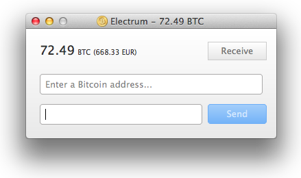

Take back your time. No more long startups.
For the users. Friendly, instant and proven.
Electrum makes Bitcoin simple.
Store your wallet on your skin or in your mind with a brainwallet. You only need 12 words to recover your wallet.
Never wait again to download blocks. Electrum is instantly on and off from the first time you use it.
Donations to 1NmduGNyC5XejoysbuioodCN3jR3yf64xM

Features
- Encrypted: your private keys are protected with a password. You are protected from thieves.
- Deterministic: If you lose your wallet, you can recover it from its seed. You are protected from your own mistakes.
- Instant on: the client does not download the blockchain, it gets that information from a server. No delays, always up-to-date.
- Secure: Your private keys are not shared with the server. You do not have to trust the server with your money.
- No downtimes: Several servers are available. There is no single point of failure.
- Ubiquity: You can use the same wallet on different computers. Your wallet is "in the cloud", and that cloud is the Bitcoin blockchain!
- Freedom: Electrum servers do not store user accounts. You are not tied to a particular server.
- No scripts: Electrum does not download any script at runtime. A compromised server cannot compromise your client.
- Supports Bitcoin URIs
- Free software: Gnu GPL v3. Anyone can audit the code. Anyone can run a server.
Screenshot

Community
- Github: https://github.com/spesmilo/electrum/
- Discussion: Electrum thread in the Bitcoin forum
- IRC channel: join the #electrum channel on Freenode
- Documentation: https://en.bitcoin.it/wiki/Electrum
- Localization: https://en.bitcoin.it/wiki/Electrum/Translation